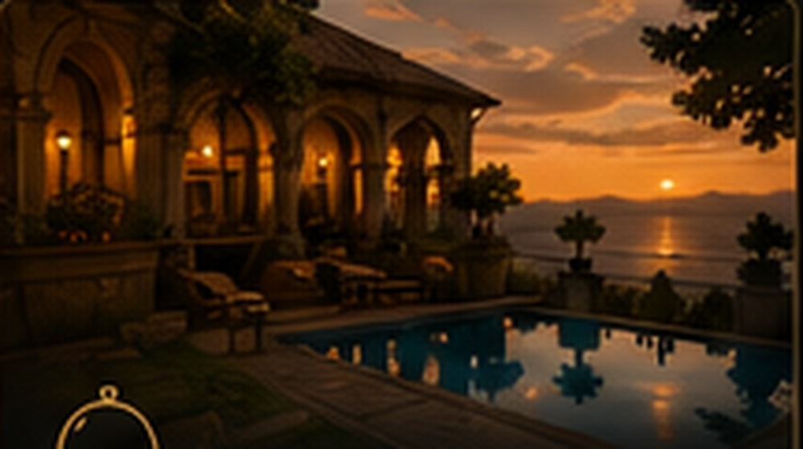
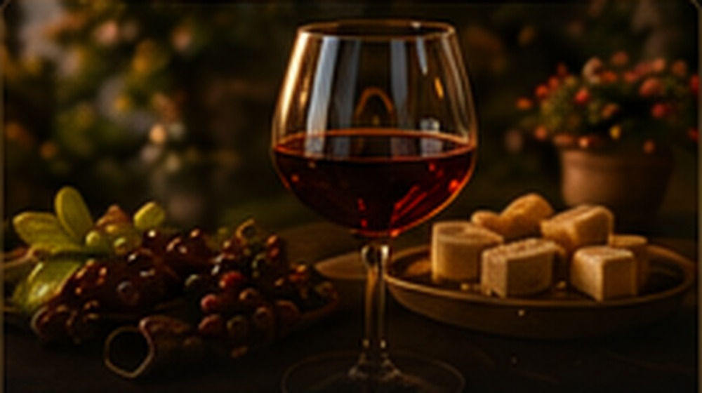

◉
Eigene Routen planen
Gebt einen Wunschort ein und findet alle Routen, die ihn bereits verbinden.
ORT UND ROUTE FINDEN →Incanto – Verzauberung.
Die kleinen und großen Momente,
die eine Reise unvergesslich machen.
Gebt einen Wunschort ein und findet alle Routen, die ihn bereits verbinden.
ORT UND ROUTE FINDEN →
Entdeckt alle vorhandenen Routen und grenzt sie nach Reisegefühl ein.
ROUTEN ENTDECKEN →
Sammelt eure Favoriten beim Entdecken und führt eure beiden Auswahlen anschließend zusammen.
LIEBLINGSROUTEN ÖFFNEN →Eine maßstabsgetreue Karte mit Städten, Küsten, Seen und Landschaften. Blättert durch alle Reisen und seht sofort, wo sie beginnen, welche Orte sie verbinden und wo sie enden.


Nicht noch mehr Pflichtstopps, sondern Situationen, wegen denen sich ein Reisetag später richtig anfühlt.
Ein freier Abend, ein Glas Brunello und kein weiterer Programmpunkt danach.
Hafenleben am Morgen, bevor Tagesgäste und Ausflugsboote den Rhythmus verändern.
Fisch, Stimmen, Granita und ein Vormittag, der nicht zwischen zwei Sehenswürdigkeiten gequetscht wird.
Ein Villengarten am Nachmittag und die Rückfahrt über den See, wenn das Licht bereits weicher wird.
Nicht nur Fähre hin und zurück, sondern genug Zeit für Wasser, Aperitivo und einen ruhigen Inselabend.

Ein ganzer Wellnesstag in Pré-Saint-Didier, ohne ihn noch mit einer Wanderung rechtfertigen zu müssen.
Werkstätten, Märkte und Produzenten, die nicht nur eine Adresse sind, sondern einer Route ihren eigenen Charakter geben.
Werkstätten, Höfe und Stücke, die nicht wie austauschbare Souvenirs aussehen.
Ein kleines Dorf verbindet bemalte Häuser mit einer regionalen Weinothek im Burgkomplex.

Ein Produzent, ein langer Termin und Zeit, den Ort danach ohne weitere Verkostung zu erleben.
Dragierte Mandeln als echtes regionales Handwerk statt bloße bunte Auslage.
Kleine Produzenten, Grenzlandküche und Weißweine, die eine eigene Reise tragen können.
Ein Vormittag für kleine Läden und Märkte, bevor die klassische Toskanafahrt beginnt.
Wählt zwei Reisen aus. Dauer, Strecke, Schwerpunkte, Reisegefühl und Wohnmobil-Tauglichkeit stehen anschließend ohne Umweg nebeneinander.
Ausgewählte Grundrouten, Quellen und unsere eigenen Abzweigungen.